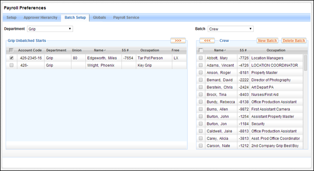

The Payroll Preferences screens are used to configure various settings and preferences that affect the payroll and electronic timecard system. These preferences include the following:
·
Setup
This screen allows you to configure the payroll parameters of your production and set options for timecard workflow.
·
Timecard
Approver Hierarchy
This screen allows you to decide who approves timecards for each department and in what order.
·
Timecard
Batch Setup
This screen allows you to create your payroll batches and organize timecards into those batches.
·
Payroll
Globals
This screen allows you to set default options for payroll features as well as globally update a week's timecards with schedule information such as NDB times and Grace.
· Payroll Service Preferences (Optional)
This screen allows you to set options related to how information is transmitted to your payroll service.
Each of these screens is described
in more detail below.
The Payroll Preferences Setup Screen
These Payroll Setup fields are described below:
Production Setup
· Studio: Select Independent or Major.
· Production Type: Select Feature or Television.
· Contract: The selections in the Contract drop-down will differ depending on the Studio and Production Types selected
o If Television: One-Hour Series is selected, then additional fields will open to allow you select the Season # and the date when production started.
Note: Contract Type is used to refine the IATSE occupation list available in the Start Form screen.
· ASA Contract: Select Theatrical, Pilot/Long-Form, or other TV.
· NY Region: If you are shooting in or around NYC, this selection refines the east coast union occupation lists and rates.
· Last Day of Prep: Select the last day that Prep rates will be in effect on the production.
Start Form Defaults
·
The Major
Account number,
Global Preferences
· Display Options:
o Decide if you want employee guarantees appearing in the header of non-union employee timecards.
o Enable or disable timecard to PR discrepancy highlighting in the Timecard Review dashboard.
·
Timecard
Creation: By default timecards are automatically created for the crew. You
may disable this option. If disabled, employees and/or approvers will need to
manually create every timecard.
· Non-Union Overtime Rule: Select the type of overtime rule you wish to use when paying non-union employees. The choices are:
o
(A single Meal Penalty per day is included if meal breaks are missed)
o Daily OT: Calculated daily. The first 8 Hrs at 1.0x, beyond 8 Hrs at 1.5x.
o Weekly OT: Calculated weekly. The first 40 Hrs at 1.0x, beyond 40 Hrs at 1.5x.
·
Batching:
If you would like to include the week ending date in the names of your Weekly Batches, set that option
here. For example, the camera batch for
week ending 04/26/2014 would be entitled "WE042614-Camera".
The payroll Approver Hierarchy screen is used to configure the following:
· The list of people who approve each employee's timecard
· The order in which the approvers receive and review the timecards
· The person in each department who may fill out timecards for others in the same department
Typically an employee's timecard is first approved by an immediate supervisor or department head, and then routed to the Payroll Department where it receives further approvals from a member of payroll, a Production Accountant, and then an upper level manager or producer.
The approver hierarchy allows you to identify these approvers and rank them in the correct order.
The approver hierarchy screen consists of three main sections, the Department List, the Approver Hierarchy, and the Crew List.
Timecard Approver Hierarchy
People selected as approvers appear in the center section and are divided into two categories - Department Approvers and Production Approvers.
Department Approvers are those who can approve timecards only within one or more departments. Production Approvers are those who can approve timecards for the entire production.
The department list, located on the left, displays all crew departments in the production. At the very top of the list is an entry called "* Production Approvers".
When a department is selected from this list the Department Approvers box in the center of the screen displays the names of the department's timecard approvers. You may also select who will serve as these department approvers.
Department Selected
Select the "* Production Approvers" entry at the top of the Department List to select the people who will serve as production level timecard approvers - those with authority over the entire production.
Production Approvers Selected
Note: The list of potential Production Approvers is populated by only those crew members who have been granted either the View Timecard Gross or Edit Timecard Gross permission. This permission may only be obtained via the Project Permissions page.
The Approver Hierarchy section of the screen, located in the center, displays the people in the chain of approval for each department's timecards. Approvers are placed in order from bottom to top, with the first approver appearing at the bottom.
When a timecard is submitted by an employee it goes to the department approver at the bottom of the list. As it is approved it moves up the list until the topmost department approver has approved it. At that point it is sent to the first of the production approvers, and then moves up the production approver list until it has received an approval from the top approver. Timecards which receive approval from the top approver are given a status of "Approved".
Select a department on the left to modify the approver list for that department. Use the arrow buttons on either side of the approver hierarchy boxes to add, remove, or change the order of approvers.
You may grant one person from each department the authority to fill out timecards on behalf of others in the same department. For example, if you want a Best Boy to fill out timecards for members of his department, you can do so by selecting the Best Boy in the Dept. Time Entry dropdown.
Dept. Time Entry Dropdown
People given Department Time Entry authority may fill out the timecards of all coworkers in the department. However, Dept. Time Entry crew members may not submit or approve their coworker's timecards.
The Crew List is a list of crew members on the right side of the screen. Above this list is a dropdown that may be used to display all crew members or just those crew members of a single department. Timecard approvers are selected from this list.
Use the following steps to add an approver to the timecard approval hierarchy.
1. Select a department from the left hand list. To modify the production approvers, select * Production Approvers from the department list.
Note: The list of potential Production Approvers is populated by only those crew members who have been granted either the View Timecard Gross or Edit Timecard Gross permission. This permission may only be obtained via the Project Permissions page.
2. Using the left and right arrows between the middle hierarchy section and right hand crew list, add one or more crew members to the list of timecard approvers.
Note: Adding an approver does not affect the status or approval chain "position" of any timecard. The approval chain position is the point in the approval chain in which a timecard is located.
Example:
A timecard's approval chain consists of approvers A, B, and C. The timecard has been approved by A & B and is currently located in the queue of approver C. A new approver (called A1) is added between approvers A & B. The timecard located with C will not be rerouted to approver A1.
However, if the new approver is added above approver C, then the timecard will be routed to the new approver once it is approved by C, as per normal timecard approval routing.
Use the following steps to remove an approver to the timecard approval hierarchy.
1. Select a department from the left hand list. To modify the production approvers, select * Production Approvers from the department list.
2. Using the left and right arrows between the middle hierarchy section and right hand crew list, remove the applicable crew member(s) from the list of timecard approvers.
Note: When you remove an approver, all of the timecards currently assigned to that approver are moved up to the next approver in line. If there are no approvers next in line (in the case where the topmost approver is removed) then the timecards are sent down to the previous approver.
Use the following steps to change the order of approvers in the timecard approval hierarchy.
1. Select a department from the left hand list. To modify the production approvers, select * Production Approvers from the department list.
2. Using the up and down arrows between the middle hierarchy section and left hand department list, rearrange the applicable approver(s).
Note: When an approver is rearranged in the hierarchy, any timecards assigned to that approver stays with the approver. Therefore, if approver C had 50 timecards in his queue, those 50 timecards will remain in approver C's queue after the move.
The Batch Setup preferences screen is used to build your payroll batches. Use this screen to create batches and then assign employee occupations into these batches.
Batch Setup Screen

To understand how batching is organized in Lightspeed, it is important to understand the difference between Batch Setup and Weekly Batches.
· Batch Setup is the process of naming your batches and then assigning employees into the batches. This results in a list of batches, each containing one or more employees. These batches are then used to create each week's Weekly Batches.
· Weekly Batches are created once per week and are batches of timecards for the specific week ending date.
For example, a Payroll Accountant decides to place timecards for the Transportation department into a batch called "Transpo". Every week, Lightspeed will create a new Weekly Batch called "Transpo". Each of these "Transpo" batches contains the timecards for that particular week ending.
Use Batch Setup to define your batches. Use Weekly Batches to sort and manage your timecards each week.
Batch Setup is configured on the Batch Setup screen. Weekly Batches are managed on the Batch Transfer dashboard.
There are two lists on the Batch Setup screen. A table on the left displays a list of employee start forms that have not been added to a batch. The table on the right displays the batches and the employees assigned to each batch.
Unbatched Table
Note: The table of unbatched employees is actually called Unbatched Starts. Why? Because starts are what generate timecards, by batching your start forms together, the timecards generated by those start forms are then placed into Weekly Batches. You are also able to assign an employee's start form to a specific batch from the start form screen.
Batch Table
The Batch Table displays a list of the employees assigned to a particular batch. Use the dropdown menu above the table to select a different batch.
To create a new batch and populate it with employees, follow these steps.
1. Select the New Batch button above the Batch Table.
A popup will ask you to create a name for the new batch.
2. Click the Create button in the popup to create the new batch.
3. Using the checkboxes in the left column in the Unbatched Table, select one or more employees.
4. Click on the Right-Arrow button in the upper right corner of the Unbatched Table.
The employees are assigned to the new batch.
To delete a batch, select the batch using the dropdown above the Batch Table and then click Delete Batch.
The Globals screen contains the Timecard Globals table.
Payroll Globals Screen
The Timecard Globals table is used to push field values to all timecards for a given day or week. For example, if the NDB meal time ended at 8:30am on Monday, you can use this table to have all timecards indicate that Monday's NDB ended at 8:30am.
The Timecard Globals Table
To globally update timecards, follow these steps:
1. Edit the table and enter the data into the appropriate fields.
Save your changes.
2. Select the Update Timecards button.
The Globally Update Timecards popup appears.
3. Confirm that the information in the table is correct, and that you wish to update all of your timecards with it.
4. Review and select the checkbox options at the bottom of the popup.
5. Click the Update button.
All timecards for the applicable week ending are updated.
If your Lightspeed production is integrated with a payroll service and you are electronically transmitting your timecards to the payroll company, use the Payroll Service screen to configure your connection options.
The key preference on this screen is to decide if you wish to include hours to gross information on the timecards you transmit to your payroll service. Use the checkbox under Data Transfer to Payroll Service to set this option.
If you want to send your hours to gross calculations to the payroll service, then select the checkbox:
If you do NOT want to send your hours to gross calculations to the payroll service, then do not select the checkbox:
Related Topics